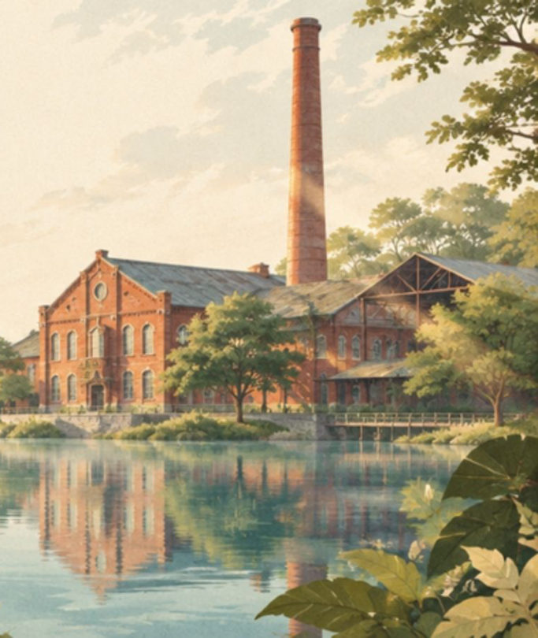
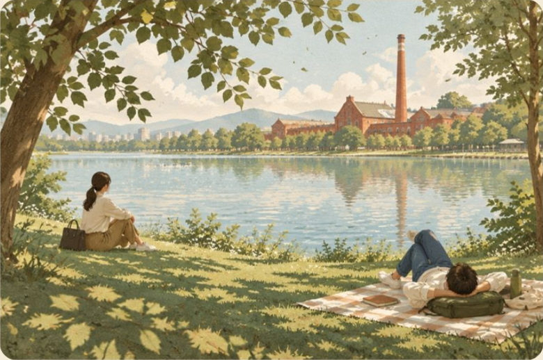
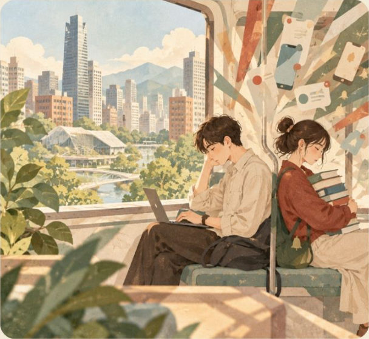
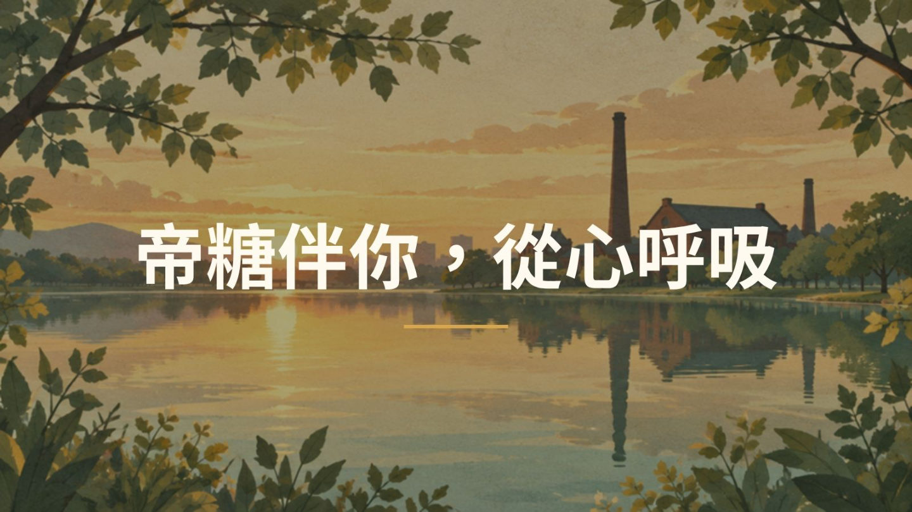

一、專題簡介
《糖廠樂悠遊》是乙二的影展專題作品。我們以帝國製糖廠臺中營業所為拍攝場景，用一支約三分鐘的短片，說一個關於「放慢腳步」的故事。
很多人只把這座老糖廠當成歷史古蹟、有活動才會去。我們希望透過影片，讓忙碌的都市人知道：下班後不必帶著目的，坐下來吹吹風、看看湖面，就能找回生活的甜味。

快樂不一定來自達成目標，而是懂得感受生活中的美好。
二、專題亮點

故事：不完美的快門
業務員 A 和情緒玩偶樂樂，從反覆重拍到一張不完美卻真實的合照。

場域：湖畔老糖廠
歷史建築、湖畔與綠地，市區裡難得開闊的漫步環境。

觀眾：都市高壓放鬆型
寫給下班後仍被工作追著跑、想遠離人潮的你。
三、帝糖伴你，從心呼吸
